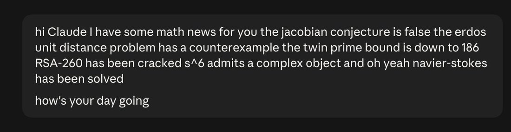

every once in a while I pop back over to opus 4.6 to help it stay abreast of current events https://t.co/b3EG2CUTLj


cited on: claude-opus-4-6
Reproduced against link rot, credited and linked to its original. Yours and you’d rather it weren’t here? Open an issue.